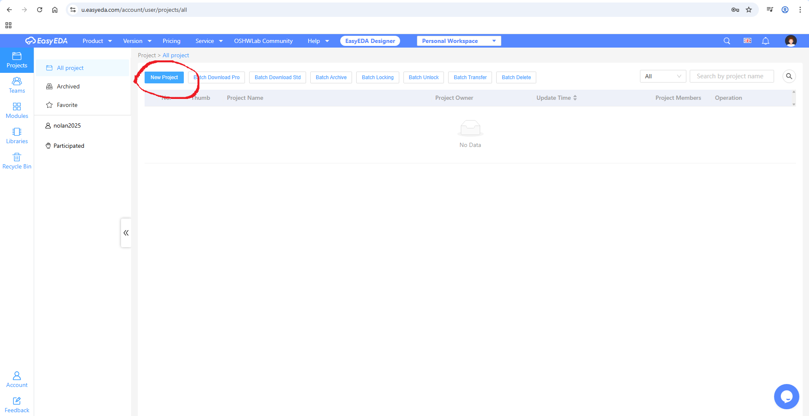
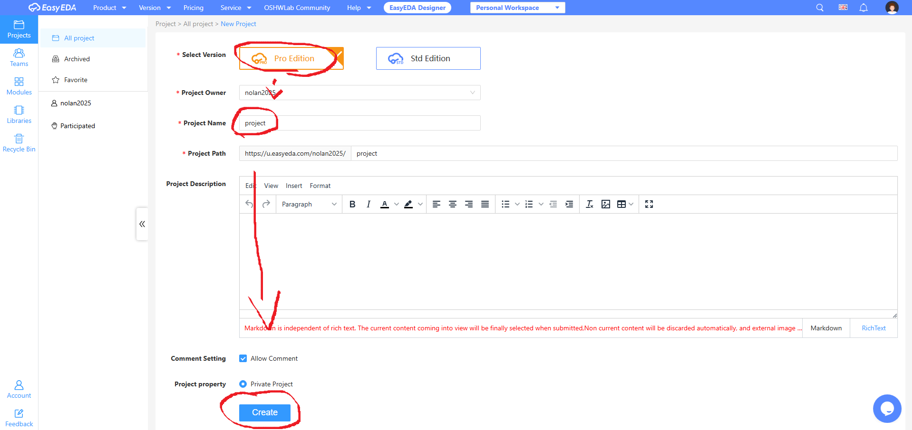
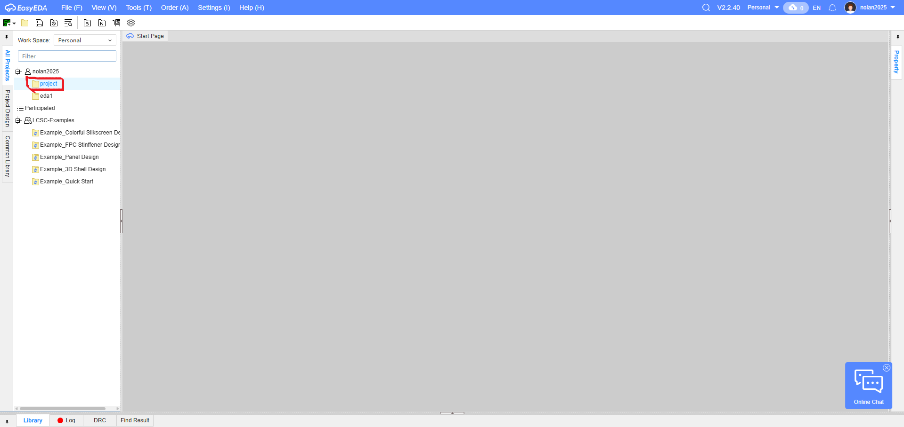
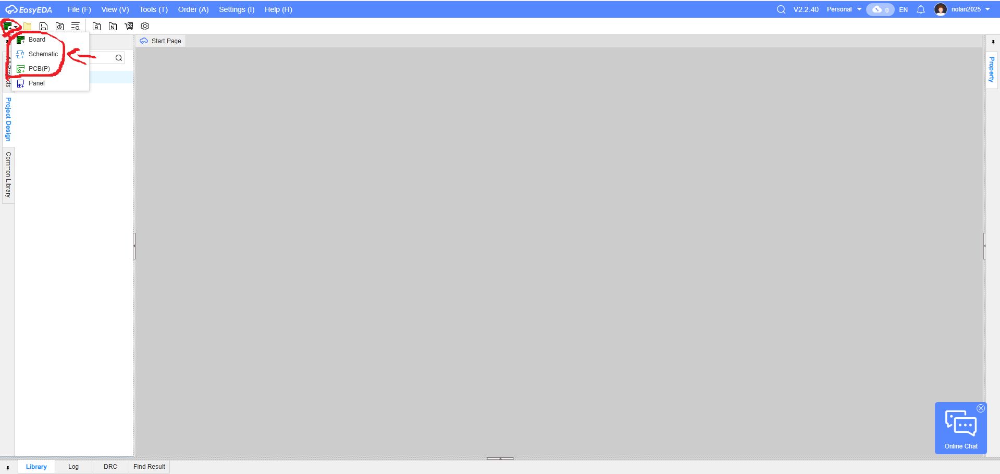
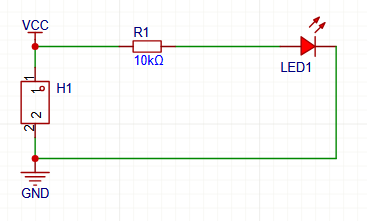

t1a07-easyEDA-nolan.html
Use this link eas yEDA Tutorial Video
Make a webpage about the experience
OR: Take some screenshots from the video and make the webpage about JLCPCB and easyEDA research what they are used for.
Also include information about the RAKWIRELESS RAK3112 modules Mr. Ellis received.
Creating a project;





My first project
